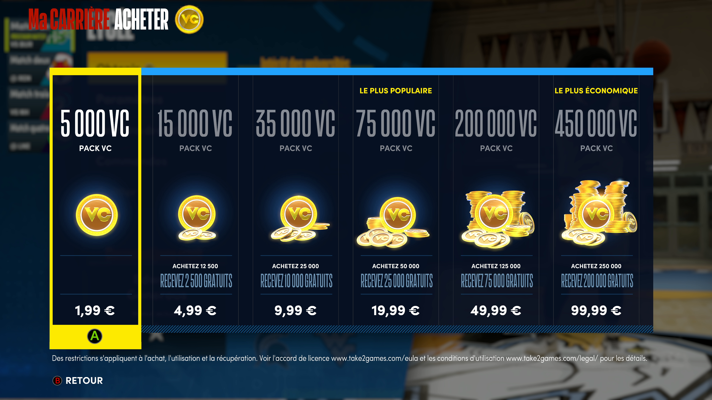
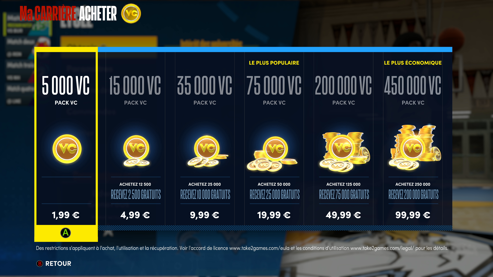

Creer son joueur
Le Builder du joueur change quant a lui et gagne en interet. Les camemberts pour definir les aptitudes physiques sont mis au placard, et ces dernieres deviennent des points ameliorables a part entiere. La vitesse, la force, l'endurance remplacent d'anciennes competences comme les fadeways de loin ou bras roules au poste par exemple. Idem pour les insignes,capacités renouvelees (le detail de certains remplacements d'insignes juste ici). Le Takeover est desormais divise en deux grandes parties, a savoir une competence principale activable plus tot, avant une secondaire et le Takeover d'equipe si l'on aime prendre des risques tout en etant regulier, car un ballon perdu ou une mauvaise action peuvent remettre les compteurs de Takeover a zero. Les bouleversements ne sont pas enormes, mais font grandement gagner en reflexion lors de la creation du joueur.
Choix du poste:
- Meneur
- Arriere
- Ailier
- Alier fort
- Pivot
Choix du physique:
| Taille minimum | Taille maximum | Poids minimum | Poids maximum | Envergure minimum | Envergure maximum | |
|---|---|---|---|---|---|---|
| Meneur | 1,70 m | 2,03 m | 61 kg | 102 kg | 1,70 m | 2,29 m |
| Arriere | 1,83 m | 2,06 m | 75 kg | 106 kg | 1,82 m | 2,31 m |
| Ailier | 1,96 m | 2,08 m | 79 kg | 113 kg | 1,96 m | 2,34 m |
| Ailier Fort | 2,01 m | 2,13 m | 95 kg | 127 kg | 2,01 m | 2,39 m |
| Pivot | 2,06 m | 2,21 m | 97 kg | 131 kg | 2,06 m | 2,46 m |
Comme vous pouvez le voir, le choix de nos parametres physique et de notre poste va beaucoup agir sur nos notes d'attribut.
L'experience est donc renouvelee pour la creation de joueur, mais celle-ci a un cout. Ainsi, vous devrez racheter le jeu si vous n'avez pas pris l'edition Mamba. Sachez toutefois que la monnaie virtuelle est reportee d'une version ONE/PS4 a une edition next-gen, une bonne nouvelle si vous avez mis de côte. Sinon, si l'on met les elements cosmetique a part, la note s'avere salee pour monter son joueur au maximum, soit plus de 250 000 VC ou 60€ environ si l'on choisit de sortir la carte bleue (100 000 VC sont offerts si vous avez pris l'edition Mamba). Les depensiers seront cependant limites par l'obligation de jouer pour depasser la note generale de 85, mais il faut avouer que NBA 2K21 next-gen est un pay-to-fast en carriere, et ça n'est dramatiquement plus une surprise.
 
